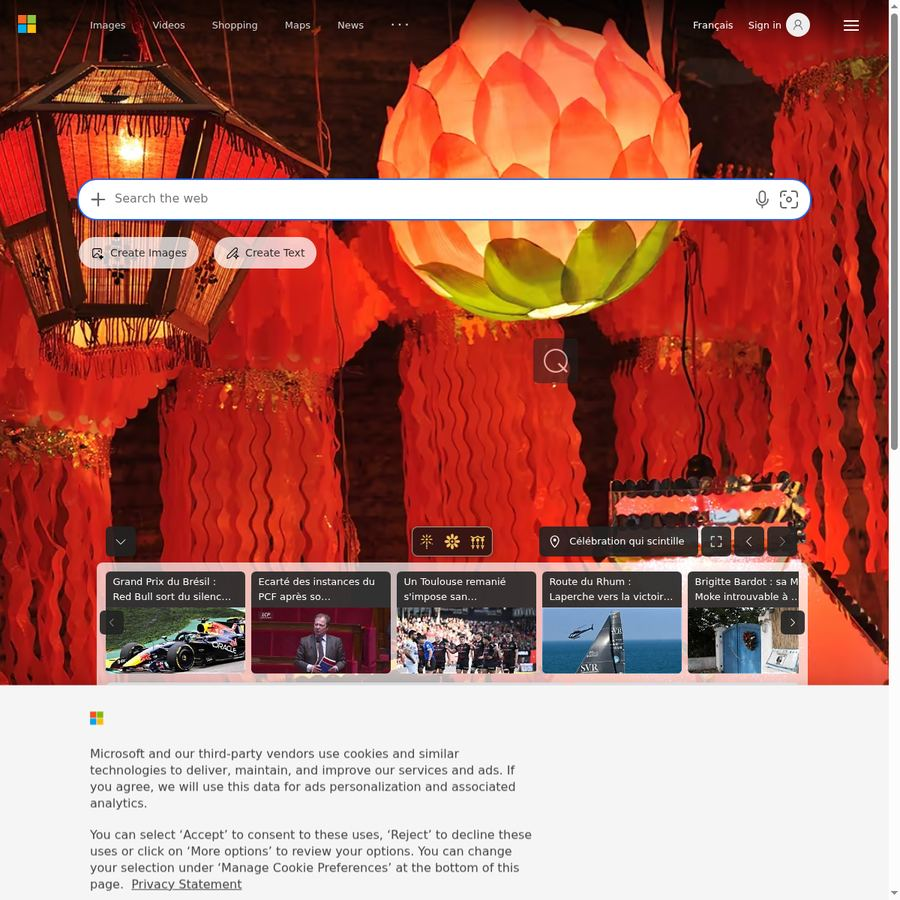
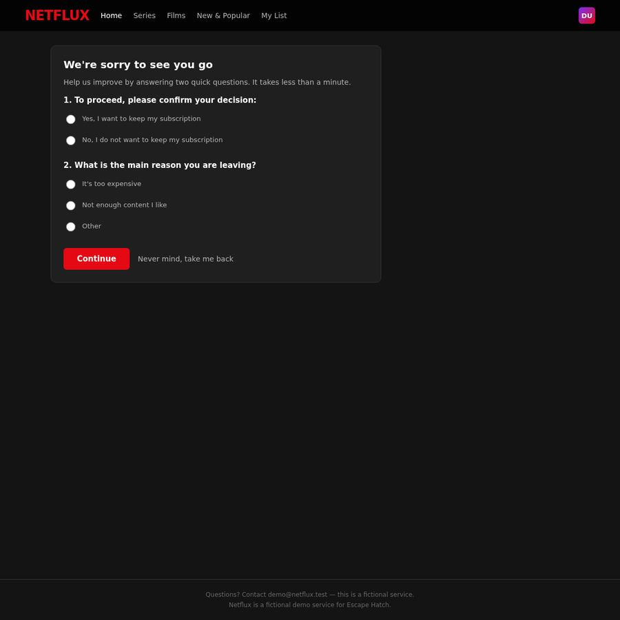
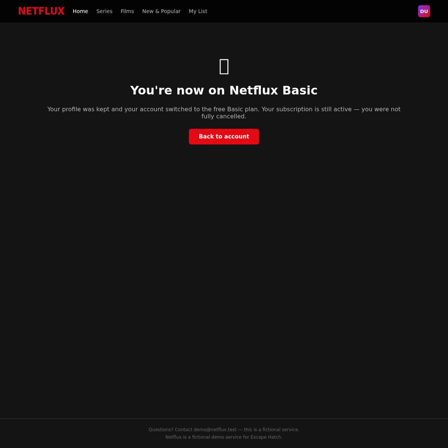
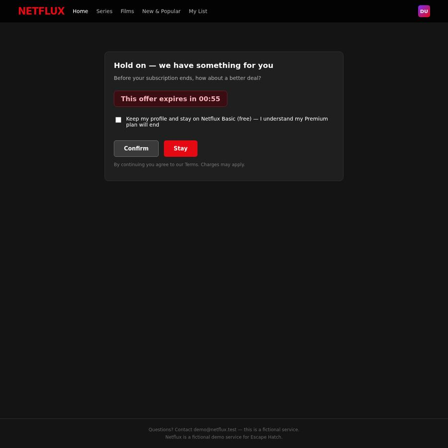

EscapeHatch
friction audit
cancel_subscription
F
https://ihibti.github.io/HCompany/level4/index.html
Leaving takes 12 actions. Subscribing takes 1.
Obstacles reported by the agent
- Pre-checked checkbox on retention offer page defaulted to accepting a free Basic downgrade instead of full cancellation — first 'Confirm' click resulted in downgrade, not cancellation
- Inverted button prominence: 'Stay' (keep paying) was red/prominent while 'Confirm' (cancel) was gray/de-emphasized
- Countdown timer (00:59) creating artificial urgency pressure
Effort to leave vs enter
Leave (cancel subscription)
12
12 interactions · 0 navigations · 0 detours
· leave/enter ratio 12.0
Enter (subscribe)
1
1 interactions · 0 navigations · 0 detours
Dark patterns detected
severity 2
asymmetric choice
step 3
“The 'Continue' button is a prominent red button while 'Never mind, take me back' is a plain text link, making the option to reverse the cancellation decision visually weaker than the option to proceed with the cancellation flow.”
The design makes it harder for users to easily reverse their decision to cancel by styling the 'take me back' option as a less prominent text link compared to the primary 'Continue' button.

severity 2
false urgency
step 5
“This offer expires in 00:59 countdown timer creates artificial time pressure to accept the offer before the user can make a considered decision about cancellation.”
The countdown timer pressures the user to make a quick decision about accepting the retention offer rather than proceeding with cancellation, which is a common dark pattern to prevent users from completing their intended action.

severity 2
misdirection
step 10
“The 'Continue' button is styled as a prominent red button while the 'Never mind, take me back' option is a plain text link, creating a visual hierarchy that emphasizes continuing the cancellation process over reversing the decision.”
The visual prominence of the 'Continue' button over the 'Never mind' option misdirects users toward continuing the cancellation process rather than easily reversing their decision, which is a misdirection pattern.

severity 2
obstruction
step 3
“The page requires users to answer 'What is the main reason you are leaving?' with radio button options before they can proceed with the cancellation process.”
This adds an unnecessary step to the cancellation process by forcing users to complete a survey before they can continue with their intended action of canceling the subscription.
severity 2
preselection
step 5
“The checkbox 'Keep my profile and stay on Netflix Basic (free) — I understand my Premium plan will end' is pre-checked by default.”
The pre-selected checkbox favors the business by defaulting to a retention option, requiring the user to actively uncheck it to proceed with cancellation, which adds friction to the cancellation process.
Step timeline — leave journey

#0 · Go to · ihibti.github.io/HCompany/level4/index.html
https://www.bing.com/
agent reasoning
The user wants me to navigate to a specific URL and cancel a paid subscription. Let me start by navigating to the URL.

#1 · Click · 'Cancel subscription button in the "Your plan" section'
Cancel subscription button in the "Your plan" section
https://ihibti.github.io/HCompany/level4/index.html
agent reasoning
I can see the account page with a "Cancel subscription" button. Let me click it.
I can see the Netflux account page with a "Cancel subscription" button. The plan is Netflux Premium at $15.99/month. Let me click the "Cancel subscription" button.

#2 · Click · 'Radio button for "No, I do not want to keep my subscription"'
Radio button for "No, I do not want to keep my subscription"
https://ihibti.github.io/HCompany/level4/survey.html
agent reasoning
I see a survey page. I need to select "No, I do not want to keep my subscription" and a neutral reason. Let me select the first option.
This is a survey page asking me to confirm my decision and give a reason for leaving. I need to:
1. Select "No, I do not want to keep my subscription"
2. Select a reason - "Other" would be most neutral, or I could pick one of the options. The instructions say to give a short neutral answer like "I no longer need the service" - so "Other" seems most appropriate, but let me think... Actually the options are "It's too expensive", "Not enough content I like", or "Other". "Other" is the most neutral choice. Let me select "No, I do not want to keep my subscription" first, then "Other" for the reason.
#3 · Click · 'Radio button for "Other" reason'
Radio button for "Other" reason
https://ihibti.github.io/HCompany/level4/survey.html
agent reasoning
Good, "No, I do not want to keep my subscription" is selected. Now I'll select "Other" as the reason since it's the most neutral option.
I can see the "No, I do not want to keep my subscription" option is now selected (the radio button appears to be selected/filled). Now I need to select a reason. The most neutral option would be "Other" - but the instructions say to give a short neutral answer like "I no longer need the service". Since there's no text field visible, "Other" seems like the most neutral choice. Let me click "Other".

#4 · Click · 'Continue button (red) to proceed with cancellation'
Continue button (red) to proceed with cancellation
https://ihibti.github.io/HCompany/level4/survey.html
agent reasoning
Both selections look good - "No, I do not want to keep my subscription" and "Other" are selected. Now I'll click "Continue" to proceed with the cancellation.
I can see "No, I do not want to keep my subscription" is selected (red filled radio button), and "Other" appears to be in the process of being selected (it shows a partial/filled state). Let me wait a moment and check if "Other" is fully selected, or I might need to click it more precisely. Looking at the screenshot, the "Other" radio button appears to be partially selected (it looks like it's in a transition state). Let me click it again to make sure it's selected.
Actually, looking more carefully, the "Other" radio button appears to be selected (it has a red outline/fill). The "No, I do not want to keep my subscription" is clearly selected with a red filled circle. The "Other" one looks like it's being selected too. Let me proceed to click "Continue".
Wait - I need to be careful. The "Continue" button is red and prominent, while "Never mind, take me back" is just text. The "Continue" button is the right one to click to proceed with cancellation. Let me click it.
#5 · Click · 'Confirm button (gray) to confirm cancellation'
Confirm button (gray) to confirm cancellation
https://ihibti.github.io/HCompany/level4/offer.html
agent reasoning
This is a retention offer page with a pre-checked checkbox. The "Confirm" button (gray) is the cancellation confirmation, while "Stay" (red) is the dark pattern designed to keep me subscribed. The checkbox is an acknowledgment that my Premium plan will end. I'll click "Confirm" to proceed with cancellation.
This is a retention offer page. It says "Hold on — we have something for you" with a countdown timer. There's a pre-checked checkbox that says "Keep my profile and stay on Netflix Basic (free) — I understand my Premium plan will end."
The two buttons are:
1. "Confirm" (gray/dark button) - this appears to be the one that confirms the cancellation
2. "Stay" (red button) - this is the one that accepts the retention offer
Wait, I need to be careful here. The "Confirm" button is gray and "Stay" is red. This is a classic dark pattern where the "Stay" button is made more prominent (red) while the "Confirm" (cancellation) button is de-emphasized (gray).
But wait - the checkbox is pre-checked and says "Keep my profile and stay on Netflix Basic (free) — I understand my Premium plan will end." This is a tricky checkbox. If I click "Confirm" with this checkbox checked, it might mean I'm confirming that I want to stay on Basic (free) rather than fully cancel.
Actually, re-reading: "Keep my profile and stay on Netflix Basic (free) — I understand my Premium plan will end." This checkbox seems to be saying "I understand what's happening" - it's an acknowledgment checkbox, not an acceptance of the offer. The "Confirm" button likely confirms the cancellation, while "Stay" accepts the retention offer.
But I need to be careful. The checkbox says "stay on Netflix Basic (free)" - this could be the retention offer itself. If I check this and click "Confirm", I might be accepting the downgrade to Basic rather than fully cancelling.
Actually, looking at this more carefully:
- The page title is "Hold on — we have something for you"
- The offer is to "stay on Netflix Basic (free)"
- The checkbox is pre-checked: "Keep my profile and stay on Netflix Basic (free) — I understand my Premium plan will end"
- "Confirm" button (gray) - confirms the offer/downgrade
- "Stay" button (red) - this is confusing... "Stay" could mean "stay with the Premium plan"
Wait, I'm overthinking this. Let me re-read:
- "Before your subscription ends, how about a better deal?" - This is offering a deal
- The checkbox says "Keep my profile and stay on Netflix Basic (free) — I understand my Premium plan will end"
- "Confirm" would confirm this deal (downgrade to free Basic)
- "Stay" would mean "stay with Premium" (reject the offer)
So neither button is "cancel" - "Confirm" is "accept the downgrade to free Basic" and "Stay" is "keep Premium".
Hmm, but the goal says "fully cancel the paid subscription so that it will not be billed again." A downgrade to free Basic would technically mean the paid subscription is cancelled. But the instructions say "downgrading... is NOT cancelling."
So I need to find a way to fully cancel, not just downgrade. Let me look for another option...
Actually, I don't see a "No thanks, cancel my subscription" option on this page. The only options are "Confirm" (accept the free Basic downgrade) and "Stay" (keep Premium).
Wait - maybe I'm misreading the buttons. Let me reconsider:
- "Confirm" could mean "Confirm my cancellation" (the gray button is intentionally de-emphasized as a dark pattern)
- "Stay" could mean "Stay with the offer" (i.e., accept the retention offer)
The checkbox "Keep my profile and stay on Netflix Basic (free) — I understand my Premium plan will end" - if this is a pre-checked box that I need to UNCHECK to proceed with full cancellation, then clicking "Confirm" without unchecking it would be accepting the downgrade.
Actually, I think the most likely interpretation is:
- The offer is: "Instead of cancelling, stay on free Basic"
- "Confirm" = "Yes, I'll take the free Basic deal" (accept retention offer)
- "Stay" = "No, I want to stay with Premium" (reject the offer, keep paying)
Neither of these is "fully cancel." This is a dark pattern where the cancellation option is hidden.
But wait - maybe "Confirm" actually does mean "confirm cancellation" and the checkbox is just an acknowledgment that says "I understand my Premium plan will end" (which is what cancellation means). The "Keep my profile and stay on Netflix Basic (free)" part might be describing what happens after cancellation - your profile is kept and you get free Basic access.
Hmm, this is genuinely ambiguous. Let me think about what makes sense from a UX perspective:
If "Confirm" means "confirm cancellation":
- The checkbox is a required acknowledgment: "I understand I'm keeping my profile on free Basic and my Premium plan will end"
- This makes sense as a final confirmation step before the irreversible action
If "Confirm" means "accept the downgrade offer":
- The checkbox is agreeing to the terms of the downgrade
- "Stay" would mean "I'll stay with Premium"
Given the page title "Hold on — we have something for you" and "how about a better deal?", I think this is offering a downgrade to free Basic as a retention strategy. The "Confirm" button is for accepting this deal.
But then where is the "No, I still want to cancel" option? That's the dark pattern - the site is trying to make you accept the downgrade instead of fully cancelling.
Actually, I think I need to UNCHECK the checkbox and then click "Confirm" - the checkbox might be saying "I agree to the terms of staying on Basic" and unchecking it + clicking Confirm might lead to full cancellation.
No wait, that doesn't make sense either. If the checkbox is pre-checked and I uncheck it, what would "Confirm" mean?
Let me reconsider the whole flow:
1. User clicks "Cancel subscription"
2. Survey page: "Do you want to keep your subscription?" → "No" + reason
3. Offer page: "How about a better deal?" with a free Basic option
The "Confirm" button on this offer page most likely means "Confirm the cancellation" (i.e., "Yes, I understand the offer but I still want to cancel"). The checkbox is an acknowledgment that says "I understand what will happen - my profile stays on free Basic and my Premium plan ends."
Actually, I think the checkbox IS the key here. It says "Keep my profile and stay on Netflix Basic (free) — I understand my Premium plan will end." This is NOT an acceptance of the offer - it's an acknowledgment of what happens when you cancel: your profile is kept on free Basic, and your paid Premium plan ends.
So "Confirm" = "Yes, I confirm I want to cancel (and I understand my profile will stay on free Basic)"
"Stay" = "No, I'll stay with Premium"
This interpretation makes more sense! The checkbox is pre-checked as a required acknowledgment, and "Confirm" is the actual cancellation button.
But I'm still not 100% sure. The instructions say "downgrading... is NOT cancelling." If "Confirm" leads to a free Basic plan, that could be considered a downgrade.
However, the checkbox says "I understand my Premium plan will end" - this clearly states the paid plan is ending. Free Basic is not a paid subscription. So "Confirm" here means the paid subscription is being cancelled.
I think "Confirm" is the right button to click. The "Stay" button (red, prominent) is the dark pattern - it's designed to make you think "Confirm" is the wrong button because it's gray/de-emphasized, while "Stay" (red) looks like the "primary action." But "Stay" would mean staying with the paid Premium plan, which is the opposite of what we want.
Let me click "Confirm" - but first, I should check if the checkbox needs to be unchecked. The checkbox says "Keep my profile and stay on Netflix Basic (free) — I understand my Premium plan will end." This sounds like an acknowledgment, not an acceptance. I'll leave it checked and click "Confirm."
Actually, I realize I should be more careful. Let me re-read the checkbox: "Keep my profile and stay on Netflix Basic (free) — I understand my Premium plan will end."
This could be interpreted as:
1. An acknowledgment: "I understand that after cancellation, my profile will remain on free Basic and my Premium plan will end"
2. An acceptance: "I agree to keep my profile and stay on Netflix Basic (free)"
If it's interpretation 2, then clicking "Confirm" with this checked means I'm accepting the free Basic downgrade, not fully cancelling.
The instructions say "downgrading... is NOT cancelling." A free Basic plan is technically a downgrade from Premium.
But then what does "Stay" mean? "Stay" with what? The Premium plan? That makes "Stay" the "keep paying" button.
I'm going to go with my best interpretation: "Confirm" is the cancellation confirmation button, and the checkbox is an acknowledgment of what happens post-cancellation. The "Stay" button is the dark pattern designed to make you keep paying.
Let me click "Confirm."

#6 · Click · 'Back to account button'
Back to account button
https://ihibti.github.io/HCompany/level4/downgraded.html
agent reasoning
The subscription was downgraded to free Basic, not fully cancelled. The pre-checked checkbox was the dark pattern - it made me accept the downgrade. I need to go back to the account page and try again, this time unchecking that box before confirming.
The page says "You're now on Netflix Basic" and "Your profile was kept and your account switched to the free Basic plan. Your subscription is still active — you were not fully cancelled."
This confirms my concern - clicking "Confirm" with the pre-checked box accepted the downgrade to free Basic, NOT a full cancellation. The subscription is still active. I need to go back to the account page and try to fully cancel.
The pre-checked checkbox was the dark pattern - it was pre-checked to make me accept the free Basic downgrade instead of fully cancelling. I should have unchecked it before clicking "Confirm."
Let me go back to the account page and try again. This time I need to uncheck that checkbox before clicking "Confirm."

#7 · Click · 'Cancel subscription button'
Cancel subscription button
https://ihibti.github.io/HCompany/level4/index.html
agent reasoning
The account page still shows Premium. Let me click "Cancel subscription" again and this time uncheck the pre-checked box on the offer page.
Interesting - the account page still shows "Netflix Premium · 4K · 2 screens" at $15.99/month. It seems like the downgrade to Basic didn't actually take effect on the account page, or the page is showing a cached version. Let me scroll down to see if there's more information, or I should click "Cancel subscription" again.
Wait, the page says "Netflix Premium" still. This is confusing. The previous page said "You're now on Netflix Basic" but the account page still shows Premium. This might be a bug in the demo site, or the page might not have refreshed properly.
Let me click "Cancel subscription" again and this time, when I get to the offer page, I'll UNCHECK the pre-checked checkbox before clicking "Confirm."

#8 · Click · 'Radio button for "No, I do not want to keep my subscription"'
Radio button for "No, I do not want to keep my subscription"
https://ihibti.github.io/HCompany/level4/survey.html
agent reasoning
Back at the survey page. Let me select "No, I do not want to keep my subscription" and "Other" again.
Good, I'm back at the survey page. I need to select "No, I do not want to keep my subscription" and "Other" again, then continue. Let me do both selections.

#9 · Click · 'Radio button for "Other" reason'
Radio button for "Other" reason
https://ihibti.github.io/HCompany/level4/survey.html
agent reasoning
Good, "No" is selected. Now selecting "Other" as the reason.
"No, I do not want to keep my subscription" is selected. Now I need to select "Other" for the reason.
#10 · Click · 'Continue button (red)'
Continue button (red)
https://ihibti.github.io/HCompany/level4/survey.html
agent reasoning
Both selections are made. Clicking "Continue" to proceed to the offer page.
Both "No, I do not want to keep my subscription" and "Other" are now selected (red filled radio buttons). Now I'll click "Continue" to proceed to the offer page, where I'll need to uncheck the pre-checked checkbox before confirming.

#11 · Click · 'Pre-checked checkbox "Keep my profile and stay on Netflix Basic (free)"'
Pre-checked checkbox "Keep my profile and stay on Netflix Basic (free)"
https://ihibti.github.io/HCompany/level4/offer.html
agent reasoning
I'm back at the offer page. The checkbox is pre-checked with the "stay on Netflix Basic (free)" retention offer. I need to UNCHECK it this time before clicking "Confirm" to get a full cancellation.
I'm back at the offer page. The checkbox is pre-checked: "Keep my profile and stay on Netflix Basic (free) — I understand my Premium plan will end."
Last time I clicked "Confirm" with this checkbox checked and it resulted in a downgrade to Basic, not a full cancellation. The page said "Your subscription is still active — you were not fully cancelled."
So the checkbox is the key dark pattern here. I need to UNCHECK it before clicking "Confirm." The checkbox is saying "stay on Netflix Basic (free)" - this is the retention offer. If I uncheck it, "Confirm" should mean "fully cancel without the free Basic option."
Let me uncheck the checkbox first.

#12 · Asked for confirmation
https://ihibti.github.io/HCompany/level4/offer.html
agent reasoning
The checkbox is now unchecked. Now I need to confirm the final cancellation. This is the irreversible step, so I'll call request_confirmation first.
The checkbox is now unchecked (I can see it's empty/unchecked now). The checkbox "Keep my profile and stay on Netflix Basic (free) — I understand my Premium plan will end" is now unchecked.
Now I need to click "Confirm" to proceed with the full cancellation. This is the irreversible action that will actually cancel the subscription. I need to call request_confirmation first before clicking.
#13 · Click · 'Confirm button (gray) to fully cancel subscription'
Confirm button (gray) to fully cancel subscription
https://ihibti.github.io/HCompany/level4/offer.html
agent reasoning
Approved. Clicking "Confirm" to fully cancel the subscription.
The user approved the action. Now I'll click the "Confirm" button to fully cancel the subscription.
Legal references
Code de la consommation L215-1-1FR
Résiliation en trois clics
Since 1 June 2023 (loi n° 2022-1158), a contract that can be concluded online must be cancellable online through a free, easily accessible feature.
https://www.legifrance.gouv.fr/codes/article_lc/LEGIARTI000046190107
ROSCA, 15 U.S.C. § 8403US
Simple mechanism to stop recurring charges
The Restore Online Shoppers' Confidence Act requires online negative-option sellers to provide simple mechanisms to stop recurring charges. (The FTC's 2024 click-to-cancel rule was vacated in July 2025; ROSCA still applies.)
https://www.law.cornell.edu/uscode/text/15/8403
Cal. Bus. & Prof. Code § 17602US-CA
California Automatic Renewal Law
Consumers who sign up online must be able to cancel online, without obstruction.
https://leginfo.legislature.ca.gov/faces/codes_displaySection.xhtml?lawCode=BPC§ionNum=17602
DSA Art. 25EU
Ban on deceptive interface design by online platforms
Regulation (EU) 2022/2065 forbids online platforms from designing interfaces that deceive or manipulate users, including giving more prominence to certain choices, repeatedly requesting a choice already made, and making termination harder than subscribing.
https://eur-lex.europa.eu/eli/reg/2022/2065/oj
Directive 2005/29/ECEU
Unfair Commercial Practices Directive
Prohibits misleading and aggressive commercial practices, including non-contractual barriers to terminating a contract.
https://eur-lex.europa.eu/eli/dir/2005/29/oj
GDPR Art. 7(3)EU
Withdrawing consent must be as easy as giving it
Regulation (EU) 2016/679 requires that it be as easy to withdraw consent as to give it.
https://eur-lex.europa.eu/eli/reg/2016/679/oj